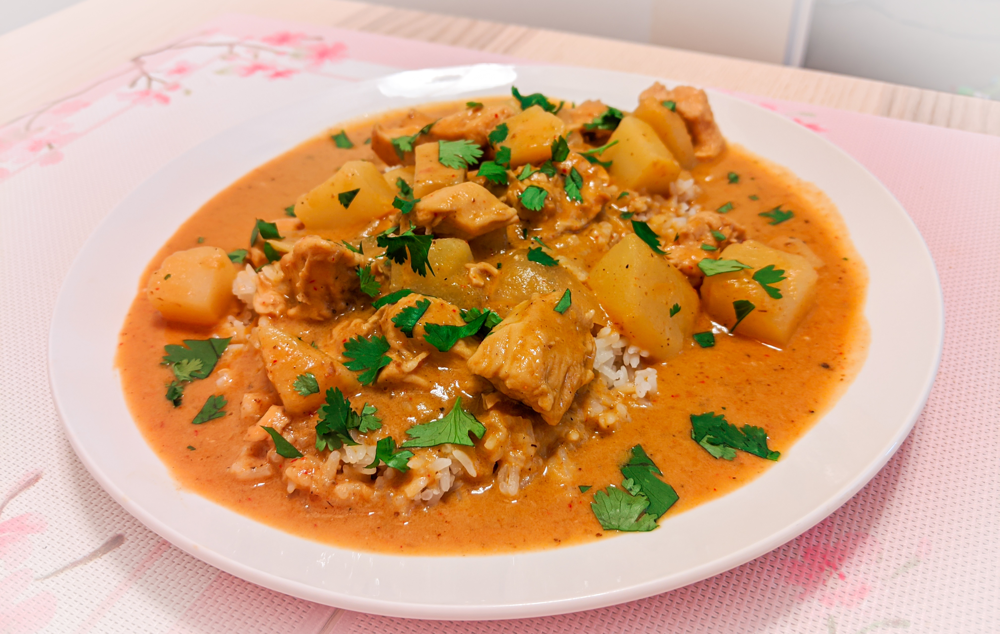

Thai Massaman Curry



This is one of my absolute favorite meals to cook. It's an earthy, umami-packed curry that can be paired with almost any protein or vegetable. I've made it with pork, chicken thighs, and beef & it has come out spectacular every time.
When i've made it without protein, my usual go-to vegetables are broccoli, corn, potato, and onion. If you accidentally get it too spicy, you can save it by adding a little more brown sugar to balance it out. Don't skip out on the coriander ; It really brightens up the flavor and gives it the necessary flavor profile to combat the spiciness.
Ingredients
| 2 | Small - medium chicken thighs or other protein - cut into small cubes |
| 2 Cups | Cooked Jasmine or Basmati rice |
| 2 ½ Tb | Maesri Massaman curry paste |
| 3 | Small Yukon gold potatoes Russet works fine, too |
| 1 | Medium yellow onion, cut in half horizontally, then sliced into 1 in wedges |
| 2 Tb | Fish sauce |
| 2 Cans | Coconut milk |
| ½ Cup | Peanuts, chopped |
| ¼ Cup | Peanut butter |
| 1 Tb | Cayenne pepper |
| 2 tsp | Brown sugar |
| Seasonings | Black pepper, Garlic powder, Coriander, Ground ginger |
Directions
| Heat a cast iron pan on medium high heat. Pour vegetable oil into the pan, let heat, and add your curry paste. Cook for one minute. Don’t use olive oil, it will burn | |
| Par cook your potatoes for five minutes in the microwave | |
| Add in your chicken and peanuts, toss to combine with the sauce. Add in garlic and onion powder to taste, about 1 Tb of cayenne for the right amount of spice. Cook for about 2 - 3 minutes. Do not add salt at this point, the curry paste is very salty | |
| Add in your coconut milk, stir to combine, deglaze, and cover & cook for 10 minutes. | |
| Add your onion, potatoes, brown sugar, fish sauce, and peanut butter. Stir and simmer over medium heat for another 12-15 minutes uncovered. | |
| Serve over Jasmine rice, garnished with cilantro and a side of toasted Naan bread. |
[Munch With Mae]
Want to contact me? I'd love to hear from you! I'll do my best to reply as soon as possible.